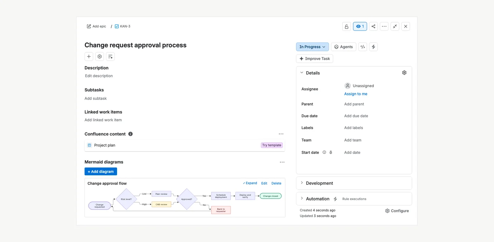
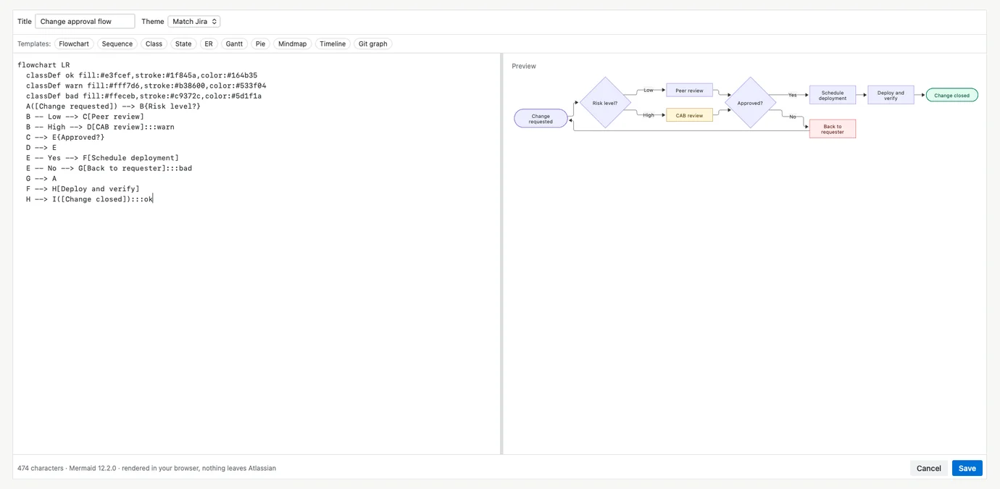
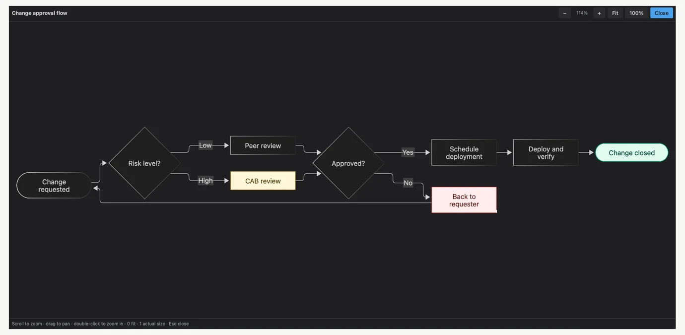

Guide · Jira Cloud
How to add Mermaid diagrams to Jira Cloud issues
Mermaid lets you describe a diagram as text and have it drawn for you. Jira Cloud does not draw Mermaid by itself: if you paste Mermaid code into an issue, you get a code block, not a diagram. This guide shows the options and the quickest way to keep real, editable diagrams on your issues.
Why put the diagram on the issue
A diagram is most useful next to the work it explains: the approval flow on the process-change issue, the sequence of calls on the bug, the states on the feature. When the diagram lives in a separate tool, it goes stale, people need another account to see it, and the link breaks when someone leaves.
Keeping it as Mermaid text has one more advantage: anyone can change a box or an arrow in seconds, without redrawing anything.
Your options
| Option | Works for | Drawback |
|---|---|---|
| Paste the code in a code block | Keeping the source | Readers see code, not a diagram |
| Draw it elsewhere and attach a PNG | A one-off picture | Out of date after the first change; the source is lost |
| Link to an external diagram tool | Teams that already use one | Another account, and your content leaves Atlassian |
| An app that renders Mermaid in the issue | Living diagrams on the issue | Needs an admin to install it once |
Step by step with Mermaid Diagrams Live Editor for Jira
- A Jira administrator installs Mermaid Diagrams Live Editor for Jira from the Atlassian Marketplace. It is free for up to 10 users.
- Open an issue. The first time, click the apps button under the issue title and choose Mermaid diagrams. The panel stays on that issue.
- Click Add diagram, give it a title, and type or paste your Mermaid code. The preview on the right updates as you type, and syntax errors appear with Mermaid’s own message. If you are starting from scratch, pick a template: flowchart, sequence, class, state, ER, Gantt, pie, mindmap, timeline or git graph.
- Click Save. Everyone who can see the issue now sees the diagram, drawn as sharp SVG. Use Expand to open it full screen with zoom and pan.

Example: a change approval flow
Copy this into the editor to see it drawn:
flowchart LR
A([Change requested]) --> B{Risk level?}
B -- Low --> C[Peer review]
B -- High --> D[CAB review]
C --> E{Approved?}
D --> E
E -- Yes --> F[Schedule deployment]
E -- No --> G[Back to requester]
G --> A
F --> H([Change closed])A sequence diagram works the same way, and is handy on bugs and integration tasks:
sequenceDiagram
participant U as User
participant W as Web app
participant A as Auth service
U->>W: Sign in
W->>A: Validate credentials
A-->>W: Token
W-->>U: Dashboard
Tips
- One idea per diagram. Several small titled diagrams on an issue (up to 20) read better than one huge one.
- Use colors sparingly. Mermaid’s
classDeflets you highlight the risky step or the happy path; the app supports it, along withstyleand%%{init}%%. - Dark mode. Leave the theme on “Match Jira” and the diagram redraws when someone switches Jira to dark mode.
- Test bigger diagrams at mermaid.live if you want to compare output; the app bundles the current Mermaid release, so the syntax is the same.

Questions
Does my diagram leave Atlassian?
No. The app is built on Forge and qualifies for Runs on Atlassian: diagrams are stored in Atlassian-hosted storage and drawn in your browser. There is no external account and no server of ours involved.
Who can see and edit diagrams?
Anyone who can view the issue can see its diagrams and edit them. Deleting the issue deletes its diagrams.
Can I use Mermaid in Confluence too?
Yes, see how to add Mermaid diagrams to Confluence Cloud pages.